Честный итог critic loop
Прошли: цельность дерева, чистый alpha, единый parallax, camera extremes, три прозрачные route-anchor точки и локальный decay. Заблокированы: дерево всё ещё становится первым visual read; слой резче/насыщеннее Far; правый broken lip двусмысленен как игровая поверхность; contact-zone перегружена; видимый маршрут извилистый и местами сужается примерно до 41.3 px, поэтому прежний прямой core 98.7 px не доказан. По stop condition новый случайный вариант не запускался.
Главный мобильный review-лист
Центральный кадр, крупный план узла и overlay фактического gameplay route.
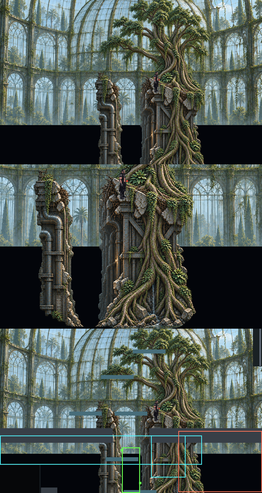
Camera motion / parallax
Contact-zone blueprint
Слева — художественная цель; справа — фактическая Godot geometry, зелёный коридор и route anchors.
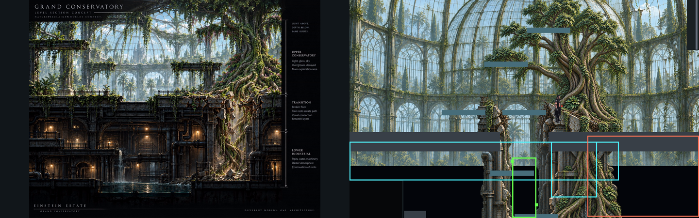
До / после corrective pass
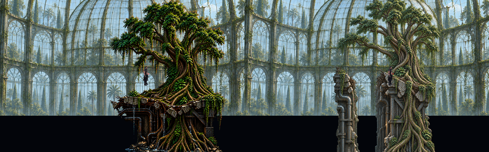
Tree → Transition → Lower
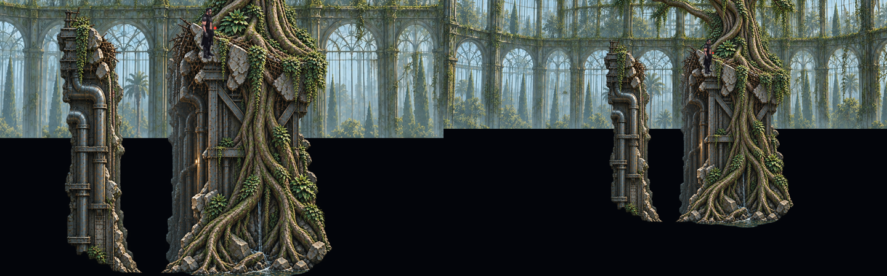
Decay / moss / broken glass
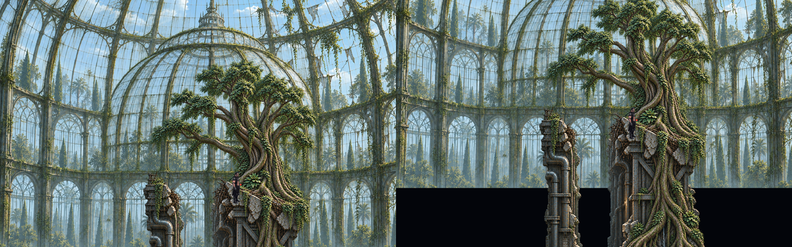
Центральная камера

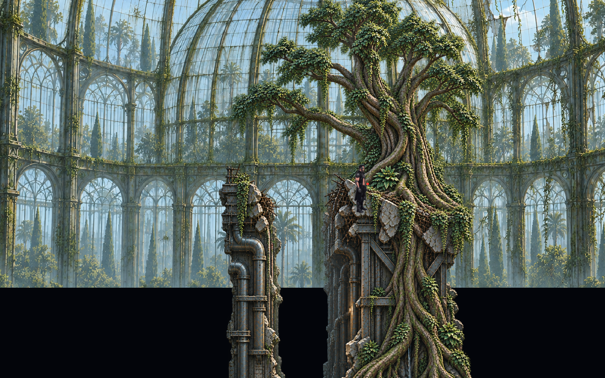
Узел корней крупно

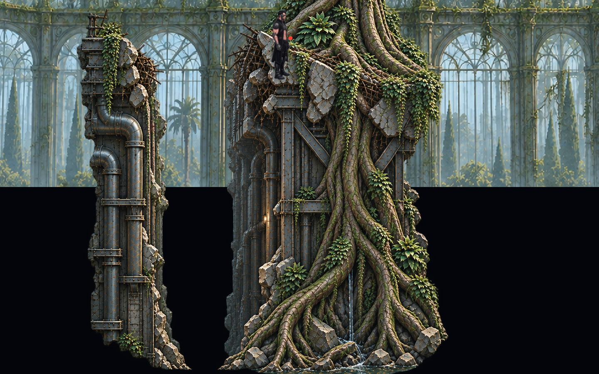
Левый предел

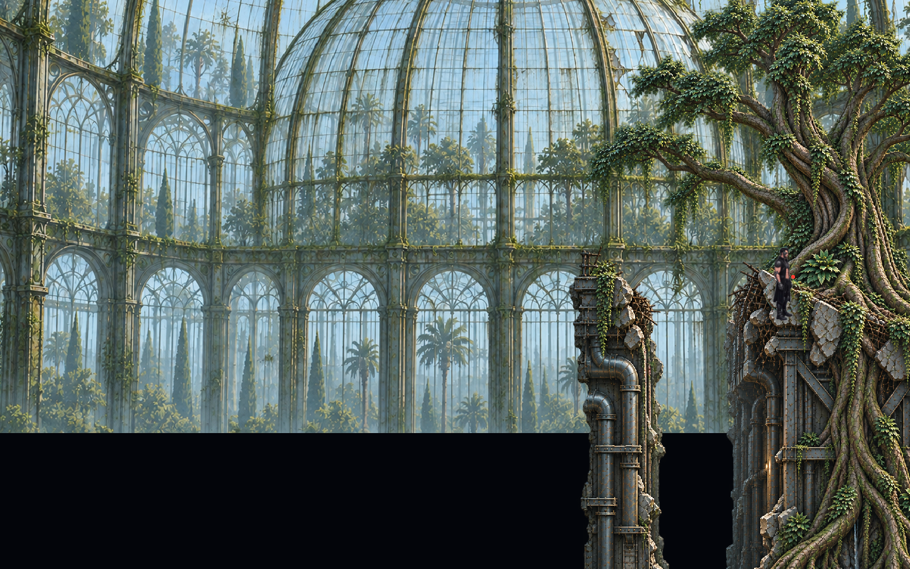
Правый предел

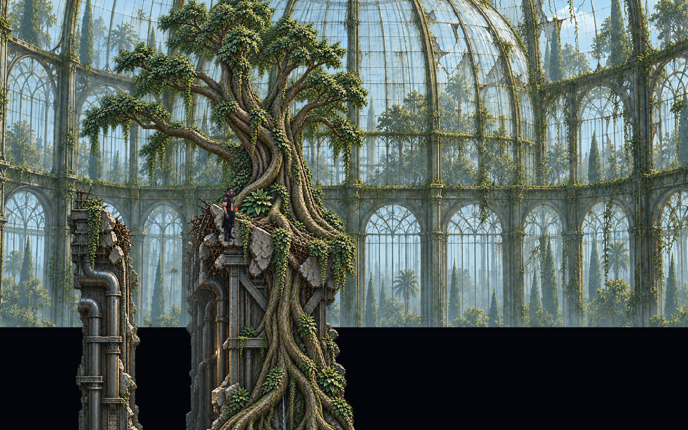
Самая высокая камера

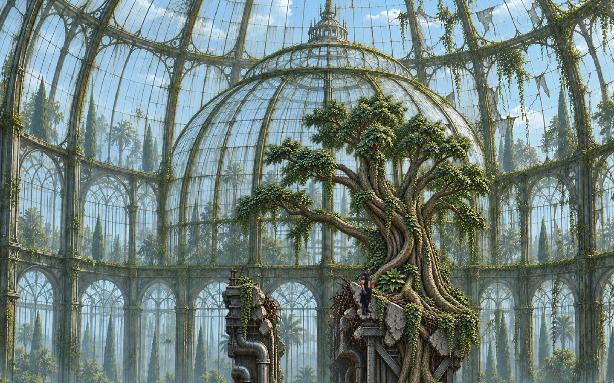
Самая низкая камера

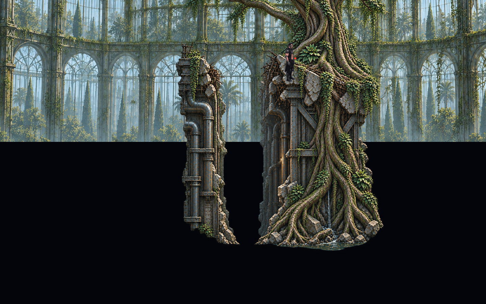
Grayscale / value

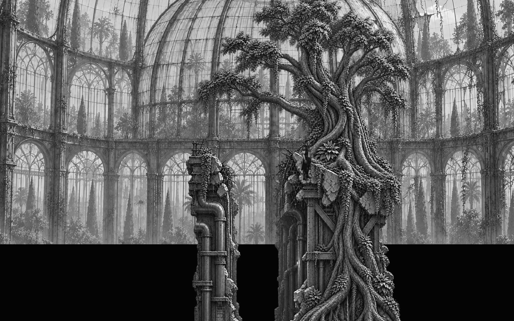
False-affordance / route audit

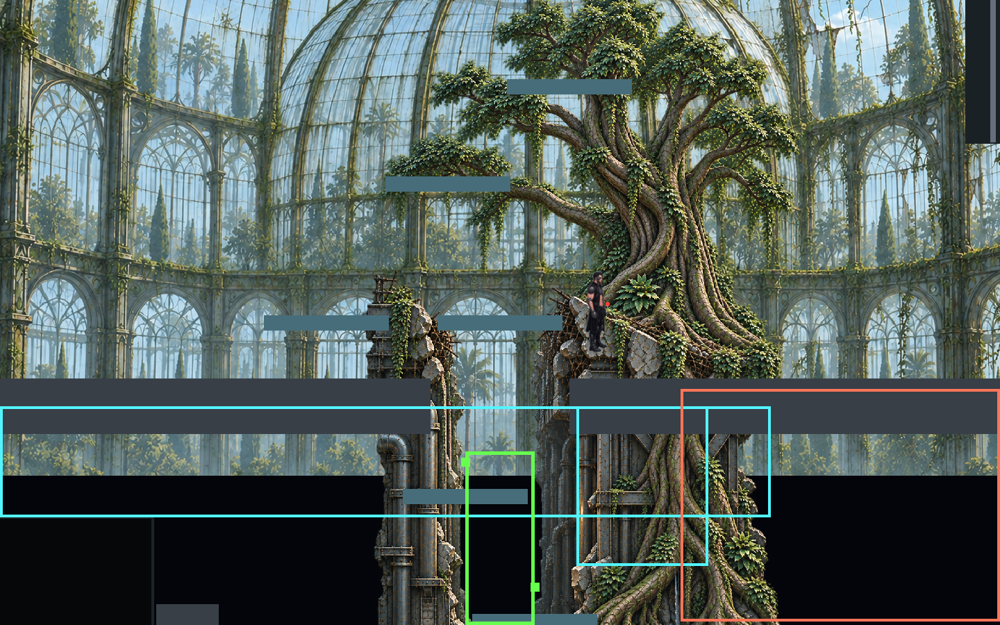